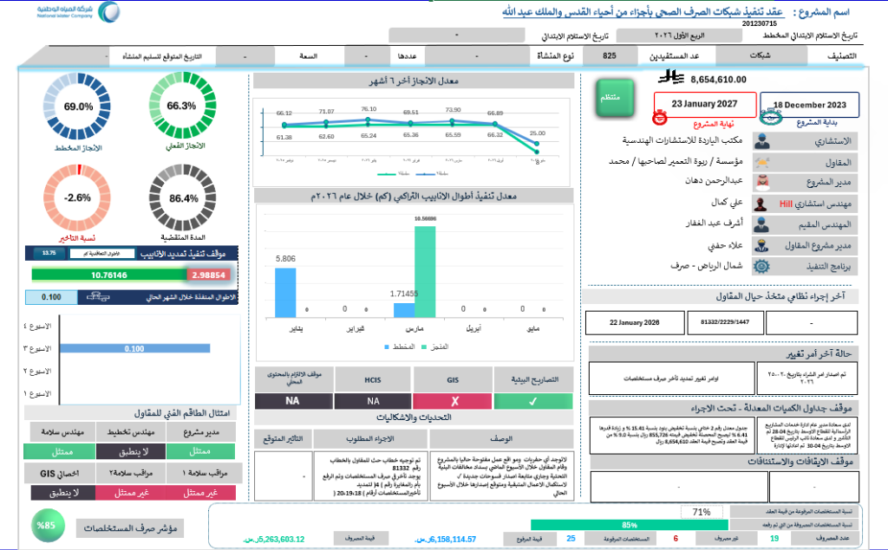
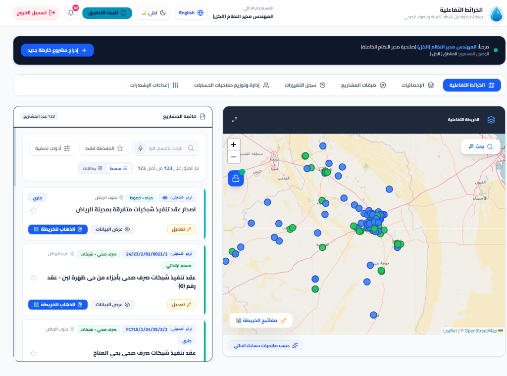
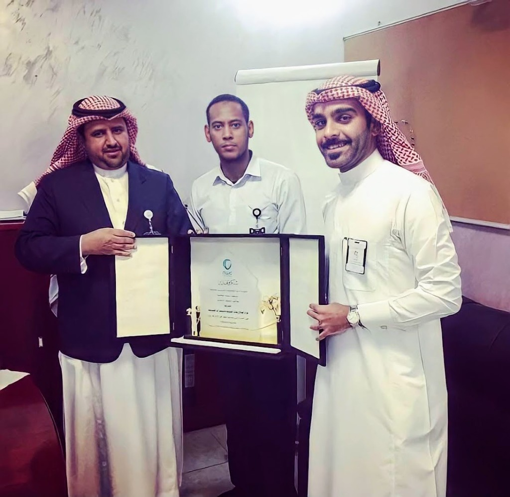
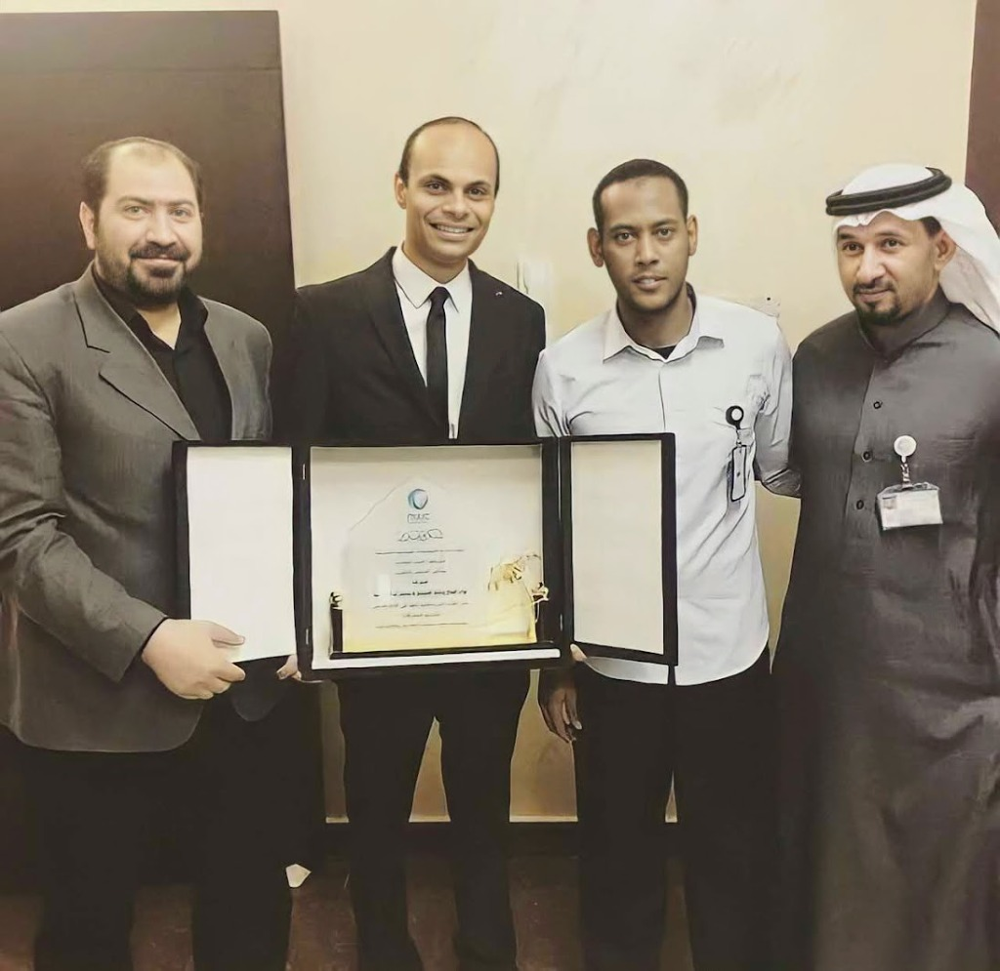

مسيرة ملهمة انطلقت من مبادرات محو الأمية التقنية والتعليم بالسودان، مروراً بإدارة المستودعات والأنظمة البرمجية، إلى أكثر من 12 عاماً من التميز في مشاريع شركة المياه الوطنية (NWC) والاستشارات الهندسية بالرياض، وبناء لوحات القيادة التنفيذية والأنظمة المكانية.
Senior Document & Project Specialist
13+ Years In Mega Projects
رحلة تجمع بين البعد الإنساني، الشغف التعليمي والبرمجي، والاحتراف في إدارة مشاريع البنية التحتية
تخرجت عام 2010م حاملاً بكالوريوس العلوم (مرتبة الشرف) من جامعة السودان للعلوم والتكنولوجيا، وبدأت مسيرتي مدفوعاً بحب العطاء المجتمعي؛ حيث تطوعت مع منظمة روح الخيرية في قيادة حملات محو الأمية التكنولوجية وتدريب المعلمين على استخدام الحواسيب في مدن وقرى سنار والسوكي وود الحداد وقرية حمدنا الله وكركوج وسنجا، إلى جانب التدريس بالمدارس الابتدائية بمدينة الهلالية بولاية الجزيرة.
صقلت هذا الشغف بدراسة مهنية ونيل دبلوم صيانة الحاسب والدعم الفني بتقدير ممتاز (2011م) والعمل في برمجة وصيانة الأجهزة، ثم انتقلت للمملكة العربية السعودية عام 2012م كأمين مستودع بمؤسسة كبرى بجدة لإدارة قواعد بيانات المخزون، ثم العمل في صيانة وبرمجة الأجهزة بالرياض.
وفي عام 2014م، بدأت رحلتي الاستثنائية في مشاريع شركة المياه الوطنية (NWC)؛ حيث تدرجت عبر محطات استراتيجية بالرياض (حي المغرزات مخرج 10، المكتب الرئيسي مخرج 8، غرب الرياض حي لبن، جنوب الرياض، وصولاً إلى وحدة أعمال الرياض مخرج 17). وابتكرت خلالها برمجيات وقواعد بيانات أحدثت فارقاً تشغيلياً حقيقياً وتوجت بتكريم رسمي من شركة المياه الوطنية.
درع التميز عند تسليم مشروع الإشراف وتطوير نظام إدارة التوصيلات لخدمات العملاء.
تطوير لوحات قيادة تجمع نسب الإنجاز الفعلي، الأنابيب، والمستخلصات المالية.
مؤسس منصة نقلة للمناهج الإلكترونية بالسودان وناشط في محو الأمية التكنولوجية.
انقر على أي محطة جغرافية أدناه لاستعراض القصة التفصيلية، المسؤوليات، وأبرز الإنجازات المحققة في كل موقع
إدارة وتصميم السجلات الرقمية وقواعد البيانات لأرشفة وتتبع كافة المراسلات والاعتمادات الفنية والمخططات الهندسية، وبناء لوحة المتابعة التنفيذية الذكية (KPI Dashboard) لمراقبة نسب الإنجاز والمستخلصات (85%) والأنابيب التراكمية لحظياً.
تكامل شامل بين الإدارة الهندسية والقدرات البرمجية وتطوير لوحات التحكم والويب
بناء لوحات المتابعة التنفيذية (Dashboards)، تطبيقات الويب التفاعلية (PWA)، واستضافة المنصات السحابية.
معالجة وإدارة البيانات المكانية والهندسية، التعامل مع طبقات الخرائط ومحاكاة السريان الهيدروليكي للشبكات بدقة.
إدارة وتتبع الوثائق الرقمية (EDMS)، التنسيق الميداني بين الاستشاري والمقاول وشركة المياه الوطنية وضبط الجودة.
إدارة وتأمين شبكات الحاسب، صيانة ودعم الأنظمة، معالجة قواعد البيانات وإدارة البيئات التقنية بالمواقع.
استكشف لوحات المتابعة التنفيذية، التطبيقات الحية، والأنظمة المكانية التي قمت بتطويرها
تطبيق ويب هندسي وتطبيق PWA متكامل يدعم معايير شركة المياه الوطنية (NWC Theme)، مع محاكاة بصرية حية لاتجاهات السريان الهيدروليكي لشبكات الصرف الصحي، تحويل صيغ KML/KMZ، وحساب كميات الأسفلت والمناهل.

لوحة قيادة تفاعلية مخصصة لمتابعة عقد تنفيذ شبكات الصرف الصحي بأحياء القدس والملك عبدالله (NWC) مع تتبع نسب الإنجاز، أطوال الأنابيب التراكمية، ومؤشرات المستخلصات.

بوابة إدارية وتحليلية جغرافية متكاملة خاصة بإدارة وتتبع عقود ومشاريع شبكات المياه والصرف الصحي بمدينة الرياض مع لوحة تحكم لتوزيع الصلاحيات، البحث المتقدم، وتتبع حالة تنفيذ العقود.

نظام برمجي وقاعدة بيانات مخصصة لإدارة وحصر آلاف التوصيلات المنزلية لخدمات العملاء بالرياض (مخرج 10 المغرزات). حقق نجاحاً كبيراً وتوج بتكريم ودرع تميز عند تسليم المشروع لشركة المياه الوطنية.
مبادرة ومشروع خاص مبتكر يهدف لتحسين جودة التعليم في السودان، وتحويل المناهج الوطنية لكافة المراحل إلى تجربة رقمية تفاعلية تدعم العمل دون إنترنت (Offline-First) مع قناة يوتيوب وحساب تيك توك مصاحبين.
سكربتات برمجية مخصصة لتنظيم ومعالجة وتصنيف ملفات المخططات المكانية (KML/KMZ) وتطابقها مع جداول الحصر، محققة وفراً ضخماً في ساعات التدقيق اليدوي.
توثيق التميز في إنجاز وتسليم عقود الإشراف الهندسي لشبكات المياه والصرف الصحي بمدينة الرياض
لحظات فخر واعتزاز بتسليم وإنجاز مشروع الإشراف على مشاريع التوصيلات المنزلية بمدينة الرياض، وتكريمي بحضور قيادات المشروع ومدراء الإدارات الاستشارية والتنفيذية.
جاء هذا التكريم تتويجاً لابتكار وتطوير «برنامج وقاعدة بيانات إدارة التوصيلات المنزلية لخدمات العملاء» خلال تلك الفترة؛ والذي أحدث تحولاً كبيراً في تنظيم حصر آلاف العقارات السكنية والتجارية، ومنع الازدواجية، وتسريع دورة العمل الفنية والميدانية، ليبقى ركيزة عمل مستقرة وناجحة.
استلام درع التميز مع قيادات المشروع

مع الطاقم الهندسي وإدارة المشروع
تدرج مهني متصاعد يوثق كافة المحطات والمواقع من عام 2010م وحتى الآن
مكتب الباردة للاستشارات الهندسية | مشروع شبكات الصرف الصحي بالقطاع الأوسط (شركة المياه الوطنية)
شركة المهندسون الاستشاريون (AAW) وشركاه بالتحالف مع فؤاد الصالح | عقد رقم (4) شركة المياه الوطنية
شركة فؤاد الصالح وخالد الضويلع للاستشارات الهندسية والبيئية | عقد رقم (3) شركة المياه الوطنية
المقر الرئيسي لشركة فؤاد الصالح وخالد الضويلع للاستشارات الهندسية
التدقيق الدوري على العمليات الإدارية والإجراءات الفنية بالمكتب الرئيسي للتأكد من تطبيق أعلى معايير الجودة الشاملة (QA/QC) والامتثال المؤسسي لكافة عقود ومشاريع الشركة.
شركة فؤاد الصالح وخالد الضويلع | مشروع الإشراف على التوصيلات المنزلية (شركة المياه الوطنية)
الإشراف على شبكات الصرف الصحي بالرياض، حصر وإدخال بيانات التوصيلات للمباني السكنية والتجارية بدقة عالية، وتصميم وتطوير برنامج إدارة التوصيلات المنزلية لخدمات العملاء، ونيل درع التكريم الرسمي من شركة المياه الوطنية عند تسليم وإغلاق المشروع بنجاح.
مؤسسة عبدالله بن إبراهيم للسيراميك (جدة) | مراكز صيانة وبرمجة الأجهزة بالرياض
إدارة حركة المخزون وتوثيق السجلات وقواعد البيانات اللوجستية بمستودعات السيراميك بجدة، ثم الانتقال لمدينة الرياض للعمل في صيانة وبرمجة الهواتف الذكية وحل المشكلات التقنية.
منظمة روح الخيرية | مدارس الهلالية الابتدائية | مركز المنقوري للكمبيوتر واللغات
التطوع مع منظمة روح الخيرية في برامج محو الأمية التكنولوجية وتدريب معلمي المدارس في ولايات وقرى سنار والسوكي وود الحداد وقرية حمدنا الله وكركوج وسنجا على استخدام وتوظيف الحاسب الآلي، والتدريس بالمدارس الابتدائية بمدينة الهلالية لمدة عام، مع العمل في برمجة وصيانة الحاسب ونيل الدبلوم المهني بتقدير ممتاز.
اعتمادات رسمية من شركة المياه الوطنية وشهادات عالمية ومحلية موثقة
جامعة السودان للعلوم والتكنولوجيا (2005م – 2010م)
شهادة الدعم الفني الاحترافي للحاسب والأنظمة المعتمدة من شركة Google العالمية.
شهادة أساسيات وبروتوكولات شبكات الحاسب الآلي المعتمدة من شركة Google.
أساسيات إدارة المشاريع، تخطيط الموارد والجدول الزمني، والمشروع من التنفيذ إلى الإغلاق.
بناء التقارير المعقدة، التنسيقات الشرطية المتقدمة، معالجة البيانات عبر الدوال والمخططات التفاعلية.
إدارة SharePoint، بيئات العمل المشتركة، وتطبيقات مايكروسوفت السحابية للأعمال.
مركز المنقوري للكمبيوتر واللغات - دبلوم مهني في تشخيص الأعطال والصيانة الشاملة.
تواصل معي مباشرة لمناقشة الفرص الوظيفية والمشاريع الاستشارية والحلول البرمجية